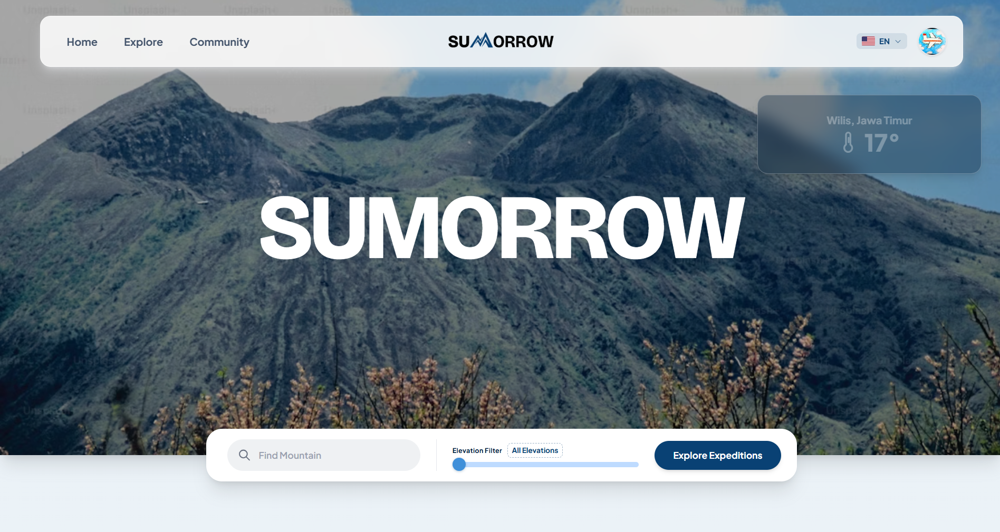

Hi, I'm Ivan Andrianus Christian
Software Engineering Student | Full-Stack Developer | Machine Learning & IoT Enthusiast
Saya merupakan mahasiswa Software Engineering di BINUS University yang berasal dari Atambua, Nusa Tenggara Timur. Saya berfokus pada rekayasa perangkat lunak modern (full-stack), integrasi model Machine Learning, serta implementasi sistem Internet of Things (IoT). Terbiasa merancang arsitektur backend yang aman dan skalabel, sistem informasi berbasis peta, hingga pengolahan data telemetri sensor.
Tech Stack & Tools
Teknologi dan tools yang saya gunakan dalam pengembangan sistem.
Featured Projects
Implementasi nyata sistem web, machine learning, dan IoT.
MindSync
Microservices / MLPlatform evaluasi dan pendampingan kesehatan mental berbasis web dengan arsitektur microservices terpisah serta integrasi model Machine Learning untuk klasifikasi dan skrining awal.

Sumorrow
Web GIS / LaravelPlatform one-stop solution untuk pendaki gunung di Indonesia. Menyediakan navigasi jalur pendakian berbasis GIS mapping interaktif serta pemantauan kondisi cuaca secara real-time.
IoT & ML Flood Prediction
IoT & Machine LearningSistem pemantauan dan peramalan kenaikan debit air sungai berbasis model Machine Learning regresi dan telemetri sensor IoT untuk deteksi dini risiko banjir.
PaySim / Financial Simulation
Data AnalyticsSimulasi dan analisis transaksi keuangan sintetis untuk riset pendeteksian anomali serta evaluasi alur pemrosesan pembayaran.
Mari Terhubung
Terbuka untuk diskusi proyek rekayasa perangkat lunak, integrasi machine learning, ataupun kolaborasi sistem IoT.